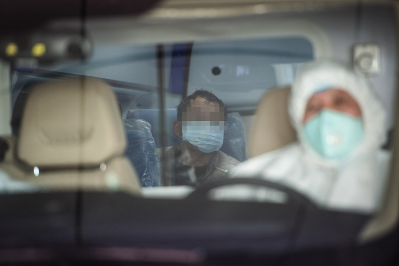

{kind=link}
武昌医院院长刘智明病逝 至少已有9位医护因新冠殉职
原文链接 备份链接 我就想站在这里，站在第一线，没有为什么。我觉得，我还可以，我能扛住压力，尽快尽多的救治更多的人、更多的小人物。 2月18日上午10:30左右，武汉武昌医院院长、神经外科专家刘智明因新冠肺炎抢救无效，在同济医院中法新城院 …
封面报道之防控篇：
黄冈：疫情次中心慢半拍 | 宜昌：被确诊护士的观察 | 荆州：感染科专家在前线 | 天门：鏖战“病死率” | 恩施：高治愈率背后 | 黄石：“稳住就赢了”
在与财新记者通话的半个多小时内，从医20多年的随州市中心医院（下称中心医院）感染科医生吴云（化名）哽咽了两次。
一次是谈起自己科室的抗疫团队已在前线奋战隔离20多天，身心都承受巨大压力——最小的战友1993年出生。一对新人则推迟婚期，双双请战。
另一次是提到“看着自己长大的”79岁女教师在自己医院里不治身亡。此前老师陪老伴去武汉协和医院看牙感染上了新冠病毒，“病太重了，发展速度太快，从住院到死亡只有三四天时间”，吴云感到“束手无策”。
有“炎帝神农故里，编钟古乐之乡”之称的随州市，距离武汉西北方向170多公里，人口258万。截至2月13日24时，随州累计确诊新冠肺炎病例1206人，死亡16例，万人感染率达到4.6人，在湖北地级市中排在前列。
为何出现如此高的确诊感染率？
2月6日接受央视采访时，随州市市长克克曾表示，随州与武汉人员往来密切，春节前返乡的人员有11.2万人，且80%都是来自农村在武汉打工的人员。
与湖北其他地市一样，随州已经把减少人员流动当成防控一大要务。1月24日，随州市交通封城。2月4日进一步升级管控，严格管控居民外出，严禁人员流动。
随州市目前共有10家定点收治医院，中心医院是当地惟一的三甲医院，也是抗击新冠肺炎的主战场。
据中心医院的数据，截至2月9日24时，中心医院累计报告确诊病例374例，在院治疗的确诊病例347例，在院疑似病例99例。中心医院已经三次向社会发出接受医疗物资爱心捐赠的公告，引发多方关注。
对于疫情的到来，吴云和一线同事并非毫无准备。1月25日，随州市新冠肺炎防控指挥部办公室首次通报称，截至1月24日24时，该市累计收治疑似病例62例，确诊5例。

2月9日，一名疑似新冠肺炎患者在救护车内等待转运至随州市中心医院救治
吴云记得，早在1月17日左右，中心医院已接触到4例不明原因发热的肺炎病人，尽管接触史不明确，吴云所在的科室还是很快向院方做了紧急汇报，医院也对科室人员和病人结构做出了紧急调整。
早在1月10日左右，中心医院已通过湖北卫健委召开的电视电话会议，了解到对出现的不明原因肺炎如何应对，省里和医院也反复对重点科室和部门进行了临床诊疗、防护和院感控制有关的培训。
大约在1月22日，中心医院做出了第一批新冠病毒的核酸检测，“但检测的报告权当时不在我们医院”，吴云说。经省疾控中心确认，确诊病例数字最终在三天后首次公布。这之后，中心医院获得检测权和报告权，开始大批量检测。
吴云回忆，大年初一起，病人的数量猛增，医院的隔离病房很快不够用了，扩展病区被提上日程。
中心医院宣传科提供的材料显示，自疫情以来，该院根据疫情变化，在原设置感染性疾病科一病区的基础上增设了5个感染性疾病科病区，6个病区目前共有病床399张，加上重症监护病房床位34张，确诊病例收治病床共计433张。
2月4日，中心医院还紧急启用龙门院区世康大楼，这里有500张床位。
医疗物资缺乏更是普遍现象。克克2月6日接受央视采访时表示，随州医护物资吃紧，“现有医用库存仅够三天”。而此前，由随州代管的县级市广水，在政府网站上公开发出了“SOS”的求助消息，请求社会各界给予物资援助。
中心医院采购办一名负责人2月6日告诉记者，医院开设新的病区后物资用量较大，口罩的日消耗数量为4000个-5000个，医用防护服日需求1000套。医院库房急需N95口罩、医用鞋套、免洗手消毒液等物资补充。
吴云表示，虽然一线科室目前还没有“断顿”，但往后走的情况仍然未知。
吴云认为，疫情防控的当务之急是传染源的筛查和控制。一是对潜在隐性感染者或轻症病人做好筛查；二是加强市民健康教育和宣传，强调自我隔离和观察，是重中之重。
来自民营医院的医生徐生坤，曾经应随州市卫健委的要求，牵头组织一支民营医院抗疫医疗队，在2月1日至7日间参加了随州另一定点医院随州高新区医院的新冠肺炎救治工作。
他观察到，这次大疫来临使很多医院措手不及、临时抱佛脚，“这也是很多病人住不进院，导致疫情放大的原因之一。”徐生坤建议，各地区主要医疗机构在兴建新的住院大楼时，应该预留相当大数量的隔离病区。
积极的一面是，吴云看到目前的防控应对已从盲目、仓促转向了有序状态，尽管病例仍在增加，发病的病人相较最初一批病人病情更轻，转归较好。
吴云知道，疫情拐点是否到来仍是疑问，许多医护人员的心理压力也还未退散，但责任使得他们士气高昂，对击退病毒仍有信心。他希望社会能理解医生的付出，给予医生一个公平的评价。
“医生不是神，我们需要的是理解。”他说。
财新实习记者陈丽金对此文亦有贡献
相关报道：
此文限时免费阅读。感谢热心读者订阅财新通，支持新闻人一线探求真相！成为财新通会员，畅读财新网！
更多报道详见：【专题】新冠肺炎防疫全纪录（实时更新中）
[《财新周刊》印刷版，各大机场书店零售；按此优惠订阅，随时起刊，免费快递。]
原文链接 备份链接 我就想站在这里，站在第一线，没有为什么。我觉得，我还可以，我能扛住压力，尽快尽多的救治更多的人、更多的小人物。 2月18日上午10:30左右，武汉武昌医院院长、神经外科专家刘智明因新冠肺炎抢救无效，在同济医院中法新城院 …
原文链接 备份链接 澎湃新闻记者 何利权 实习生 粟满莺 李佳悦 因缺乏物资，都安县医护人员自制防护用品。 因新冠肺炎确诊患者在短期内陡增，且感染人数占到所在市（州）的绝大部分，个别位置偏僻的贫困县正面临着一场艰难的“战疫”。 截至2 …
原文链接 备份链接 我也是个普通人，也会恐惧。但我是一名医务工作者，同时是一名党员；我们黄冈的疫情是全国城市里除武汉之外最重的几个之一，这样的困难情况下，我们不去，谁去？必须要坚持，一定要挺住。 口述 | 陈 林 整理 | 王 煜 我是湖 …
原文链接 备份链接 随州市中心医院肿瘤科科长称，“现在肿瘤科的医疗全部都停了，我们科也开始做一线防控，人太少，没办法。” 全文1030字，阅读约需2分钟 随州癌症患者家属反映，随州及武汉多家医院肿瘤科室因疫情被改造，患者化疗被耽误。 …
原文链接 备份链接 【财新网】（记者 王和岩）疫情袭来已遍布全国各省份。在距离武汉最北的省份黑龙江，聚集性疫情成为防控重点。截至2月6日24时，各地共报告新型冠状病毒感染的肺炎聚集性疫情48起、发病194人，波及或暴露630人，死亡3 …